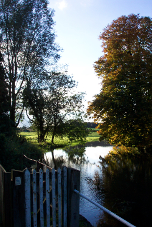

|

Layham is a mainly residential parish of around 600 people living in 240 homes. The parish is split in two by the River Brett, the only direct connection being by footbridge over the river at Layham Mill.
East of the river is Upper Layham in which two thirds of the people live. West of the river is the much larger area of Lower Layham where the remaining third of the people live.
Most of the land is farmed and the only 'industry' is the gravel extraction on the western edge.
The community is served by an Anglican church (St Andrew’s), a village hall, a playing field, and a public house (the Queen’s Head in Lower Layham).
The coronavirus (COVID-19) pandemic
Information on coronavirus, including advice about staying safe and playing your part in preventing its spread, is available at https://www.gov.uk/coronavirus.
An update on forthcoming Parish Council meetings
We have cancelled the Parish Council meeting scheduled for Wednesday 25 March.
As you know, the Annual Parish Meeting is scheduled for Wednesday 29 April, and the AGM for Wednesday 27 May. We will make a decision on whether or not to go ahead with these meetings nearer the time - we will keep you posted.
Recently added material
|


{kind=link}